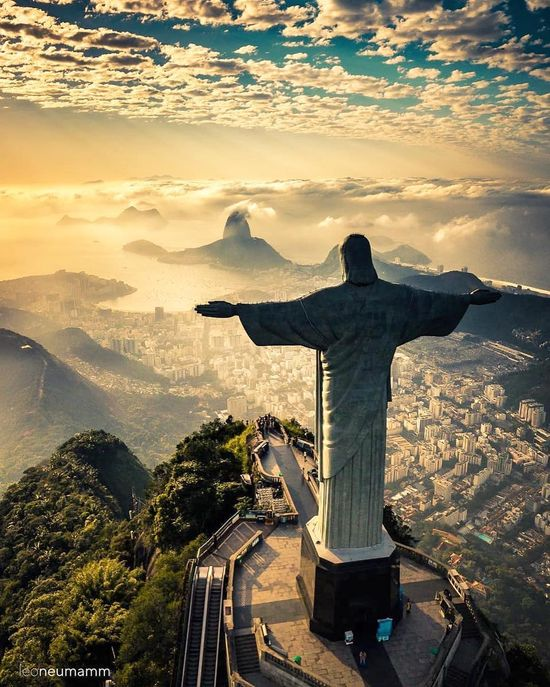

Este é um exemplo de site multilíngue.
| HOME | Sobre o Cristo Redentor | Curiosidades | História | Fotos |
|---|
Cristo Redentor
Aqui voce vai saber tudo sobre o ponto turistico Cristo Redentor

O Cristo Redentor é uma icônica estátua localizada no topo do morro do Corcovado, na cidade do Rio de Janeiro, Brasil. Com uma altura de 30 metros e uma envergadura de 28 metros, essa impressionante estátua de Jesus Cristo é um dos monumentos mais famosos e visitados do mundo. Inaugurado em 12 de outubro de 1931, o Cristo Redentor foi projetado pelo arquiteto brasileiro Heitor da Silva Costa em colaboração com o engenheiro francês Albert Caquot. A estátua foi construída usando concreto armado e revestida com pedra-sabão, tornando-se um feito notável da engenharia. Além de sua imponência e beleza arquitetônica, o Cristo Redentor tem grande significado simbólico e cultural. Ele representa a fé cristã e é um ícone de paz, acolhimento e união. Os braços estendidos da estátua simbolizam o gesto de abraçar toda a humanidade. O monumento é um importante ponto turístico, atraindo milhões de visitantes todos os anos. Sua localização privilegiada no topo do morro do Corcovado proporciona uma vista panorâmica deslumbrante da cidade do Rio de Janeiro, incluindo a Baía de Guanabara, as praias e o Pão de Açúcar. O Cristo Redentor também desempenha um papel significativo na cultura brasileira. Ele é frequentemente retratado em filmes, músicas e obras de arte, e é reconhecido como um símbolo nacional do Brasil. Em 2007, o monumento foi eleito uma das Sete Maravilhas do Mundo Moderno em uma votação global. Com seu impacto visual, espiritual e cultural, o Cristo Redentor continua a ser uma atração emblemática e uma representação poderosa do espírito carioca e da hospitalidade brasileira. Ele inspira admiração e encanta pessoas de todas as partes do mundo.